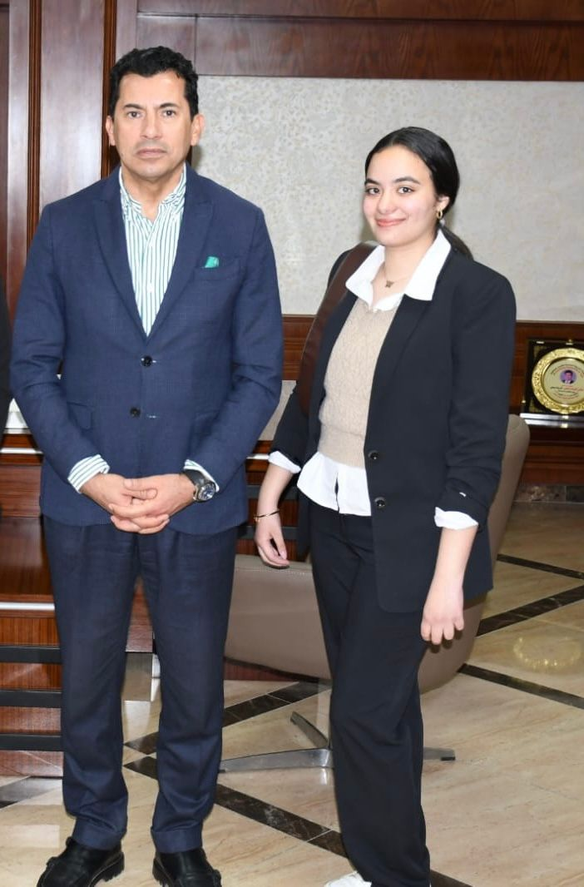
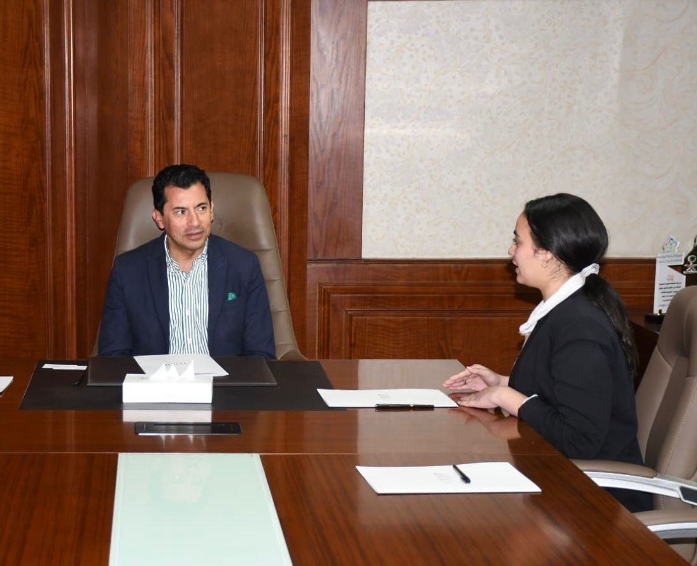

الدكتور أشرف صبحي وزير الشباب والرياضة

وزير الشباب والرياضة في حديث من القلب: الوزارة لها دور كبير في بناء مجتمع نشط استطعنا تطوير البنية التحتية للمنشآت الرياضية خلال الفترة الماضية
- . تطوير البنية التحتية للمنشآت الرياضية: - تم إنشاء وتجديد العديد من الملاعب والصالات الرياضية في مختلف محافظات مصر. - تم تزويد هذه المنشآت بالمعدات والتجهيزات الحديثة لتلبية احتياجات الرياضيين. - تم تحسين وصيانة الملاعب والصالات القائمة لضمان جودة وسلامة الممارسة الرياضية. 2. دعم النشاط الرياضي والشبابي: - تم زيادة عدد البطولات والمسابقات الرياضية الوطنية والدولية التي تستضيفها مصر. - تم تقديم المنح والدعم المالي للأندية الرياضية والاتحادات الرياضية لتطوير برامجها. - تم تنفيذ العديد من البرامج والمبادرات الموجهة لتنمية مهارات الشباب وتعزيز مشاركتهم المجتمعية. 3. تطوير الكوادر البشرية: - تم تدريب وتأهيل الكوادر العاملة في المجال الرياضي على أحدث الممارسات والتقنيات. - تم إنشاء برامج تدريبية متخصصة لتنمية القيادات الشابة في القطاع الرياضي. - تم التعاون مع الجامعات والمعاهد المتخصصة لتطوير برامج تعليمية رياضية حديثة. بشكل عام، تسعى وزارة الشباب والرياضة إلى تطوير البنية التحتية الرياضية، دعم الأنشطة الرياضية والشبابية، وبناء الكوادر البشرية المؤهلة لتعزيز مكانة مصر في المجال الرياضي على المستوى الإقليمي والدولي. وهذه الجهود تأتي في إطار استراتيجية شاملة لنهضة قطاع الرياضة في مصر.
- يما يتعلق بدعم وزارة الشباب والرياضة للأندية والاستثمارات الرياضية في مصر، يمكن إيجاز أبرز الجهود على هذا الصعيد: 1. دعم الأندية الرياضية: - تقديم المنح المالية السنوية للأندية الرياضية لتطوير برامجها وتحسين البنية التحتية. - إنشاء صندوق لدعم الأندية الرياضية يتم من خلاله تمويل المشروعات التطويرية. - توفير الحوافز والمزايا الضريبية للشركات والمؤسسات التي ترعى الأندية الرياضية. 2. تشجيع الاستثمارات الرياضية: - إصدار تشريعات وقوانين جديدة لتبسيط إجراءات الاستثمار في المجال الرياضي. - تخصيص أراض ومرافق رياضية لتشجيع المستثمرين على إنشاء منشآت رياضية حديثة. - عقد شراكات استراتيجية بين الوزارة والقطاع الخاص لتنفيذ مشروعات رياضية كبرى. بشكل عام، تعمل وزارة الشباب والرياضة على تقديم الدعم المالي والتشريعي اللازم لتعزيز قدرة الأندية على النمو والتطوير، وجذب المزيد من الاستثمارات الرياضية لتحسين البنية التحتية وتوسيع ممارسة الرياضة بشكل عام في مصر.
- كيفية التغلب على مشكلات الأندية والنجاح في المشاركة في كأس العالم هي مسألة معقدة تتطلب الاستثمار طويل الأجل والجهود المنسقة على عدة مستويات. فيما يلي بعض الإجراءات التي قد تساعد: 1. تطوير البنية التحتية والتدريب: ضمان توفير مرافق تدريب عالية الجودة وبرامج تطوير المهارات للاعبين على جميع المستويات، مع التركيز بشكل خاص على تطوير الشباب. 2. الاستثمار في الإدارة والكوادر الفنية: جذب المديرين والمدربين ذوي الخبرة العالمية وتزويدهم بالموارد اللازمة لتحسين أداء الفرق. 3. إصلاح نظام الانتقالات: إنشاء قواعد عادلة وشفافة لانتقال اللاعبين بين الأندية لتشجيع المنافسة السليمة. 4. الاستثمار في التسويق والشراكات: تعزيز علامة الأندية والارتباط بالمجتمع المحلي، والبحث عن شراكات إستراتيجية مع مؤسسات وشركات مرموقة. 5. تحسين الحوكمة والشفافية: ضمان إدارة الأندية بطريقة احترافية وخالية من الفساد لكسب ثقة الجماهير والمستثمرين. هذه هي بعض المجالات الرئيسية التي ينبغي التركيز عليها. ولكن تنفيذ هذه الإجراءات بشكل فعال يتطلب تخطيطًا استراتيجيًا طويل الأمد وتنسيقًا وثيقًا بين جميع الأطراف المعنية.
- يتم حاليًا إجراء استعدادات مكثفة لاستضافة دورة الألعاب الأفريقية لعام 2027 في مصر. بعض التفاصيل الرئيسية حول هذه الاستعدادات: 1. إنشاء قرية الألعاب الأفريقية: يتم بناء قرية سكنية كبيرة لاستضافة الرياضيين والفرق المشاركة في الألعاب. ستتضمن القرية مرافق إقامة وتدريب وترفيه. 2. تنظيم البطولات التجريبية: يتم تنظيم بطولات تجريبية في الرياضات المختلفة للتأكد من جاهزية المرافق والتنظيم. 3. برنامج تطوير المهارات: يتم تنفيذ برامج لتطوير مهارات الموظفين والمتطوعين المشاركين في تنظيم الألعاب. هذه بعض الأمور الرئيسية التي تجري حاليًا استعدادًا لاستضافة دورة الألعاب الأفريقية 2027 في مصر. أتمنى أن تكون هذه المعلومات مفيدة لك.
- هناك عدة إجراءات قد تم اتخاذها في مصر للنهوض بمستوى الألعاب الفردية: 1. برامج الاكتشاف والتطوير المواهب: - تنفيذ برامج موسعة لاكتشاف المواهب الرياضية الشابة في مختلف الألعاب الفردية. - توفير برامج تدريب وتأهيل متخصصة لتطوير هذه المواهب. - إنشاء مراكز رياضية متخصصة لرعاية وتطوير المواهب الواعدة. 2. تعزيز البرامج التدريبية والفنية: - تطوير برامج تدريبية متقدمة بإشراف مدربين أجانب ذوي خبرة عالمية. - تنظيم معسكرات تدريبية وبطولات تجريبية محلية ودولية للاعبي الألعاب الفردية. - تقديم الدعم الفني والطبي المتخصص للاعبي الألعاب الفردية. 3. حوافز ودعم للاعبي الألعاب الفردية: - توفير حوافز مادية وتحفيزية للاعبي الألعاب الفردية المتميزين. - توفير الدعم المالي اللازم لتغطية تكاليف التدريب والمشاركات في البطولات 4. التركيز على البحث والتطوير: - إجراء البحوث العلمية لتطوير أساليب التدريب والتأهيل في الألعاب الفردية. - الاستفادة من التقنيات الحديثة في مجال الرياضة لتحسين أداء اللاعبين. هذه بعض الإجراءات الرئيسية التي قد تم اتخاذها في مصر للنهوض بمستوى الألعاب الفردية. ومع استمرار الجهود في هذا الاتجاه، من المتوقع تحقيق تطور ملحوظ في هذا المجال.
- هناك جهود قد بذلت لتطوير مهارات ومواهب الشباب من خلال مراكز الشباب، وذلك على النحو التالي: 1. إنشاء وتطوير شبكة واسعة من مراكز الشباب: - تم إنشاء العديد من مراكز الشباب في مختلف أنحاء البلاد، لتوفير البيئة المناسبة لتنمية مواهب الشباب. - تم تطوير هذه المراكز من حيث البنية التحتية والتجهيزات والأنشطة المقدمة. 2. تنوع الأنشطة والبرامج: - تم توفير مجموعة متنوعة من الأنشطة والبرامج في مراكز الشباب، بما في ذلك الرياضية والثقافية والفنية والتقنية. - تم التركيز على الألعاب الفردية كالجمباز والملاكمة والتنس وغيرها، بجانب الألعاب الجماعية. - تم تنظيم دورات تدريبية وورش عمل متخصصة لتطوير مهارات الشباب في هذه المجالات. 3. اكتشاف المواهب والرعاية المتخصصة: - تم إنشاء برامج متخصصة لاكتشاف المواهب الرياضية والفنية والثقافية لدى الشباب. - تم توفير فرص للتدريب المكثف والرعاية المتخصصة للمواهب الواعدة في مختلف المجالات. - تم إقامة مسابقات وبطولات على مستوى المحافظات والمناطق لإبراز هذه المواهب. 4. التعاون مع القطاعات الأخرى: - تم تعزيز التعاون بين مراكز الشباب والمؤسسات التعليمية والرياضية والثقافية الأخرى. - بهدف تقديم برامج متكاملة لتنمية مهارات الشباب وصقل مواهبهم. على الرغم من هذه الجهود، فإن هناك مجالات يمكن تعزيزها مثل زيادة التمويل والموارد المخصصة لمراكز الشباب، وتطوير البرامج التدريبية المتخصصة. وبصفة عامة، تعد مراكز الشباب منصة مهمة لتنمية مهارات ومواهب الشباب في مصر.
- هناك استعدادات جارية للإصدار الثالث من معرض إكسبو سبورت في مصر: 1. توسيع نطاق المعرض: - تخطط الجهات المنظمة لزيادة عدد الأقسام والأنشطة المُقدَّمة في الإصدار الثالث. - سيتم إضافة أقسام جديدة للتقنيات الرياضية والصحة والرفاهية. 2. تحسين البنية التحتية: - سيتم تطوير البنية التحتية للمعرض من خلال توسيع المساحات المخصصة. - كما سيتم تحديث التجهيزات والتقنيات المستخدمة لتقديم تجربة أفضل للزوار. 3. زيادة المشاركة الدولية: - يخطط المنظمون لجذب مزيد من الشركات والعلامات التجارية الرياضية الدولية للمشاركة. - بهدف توفير تشكيلة أوسع من المنتجات والخدمات المتطورة. 4. برامج متنوعة للجمهور: - سيتم إعداد برنامج فعاليات متنوع، يشمل ندوات وورش عمل وعروض حية. - بالإضافة إلى مسابقات وبطولات رياضية للزوار. 5. التسويق والترويج المكثف: - ستتم حملات إعلامية وترويجية موسعة عبر مختلف القنوات لجذب الحضور. - مع التركيز على استهداف شرائح أوسع من الجماهير. بشكل عام، تعكس هذه الاستعدادات رغبة المنظمين في تطوير وتوسيع نطاق هذا الحدث الرياضي الحيوي في الإصدار المقبل. ومن المتوقع أن يشهد الإصدار الثالث نجاحًا أكبر من سابقيه.
- هناك توقعات بأن تحقق المدينة الأولمبية في مصر فوائد مهمة على عدة مستويات: 1. التنمية الرياضية: - ستوفر المدينة الأولمبية مرافق تدريبية متطورة لتطوير الرياضات المختلفة. - كما ستساهم في اكتشاف ورعاية المواهب الرياضية الجديدة. - وتحسين مستوى المنتخبات الوطنية استعدادًا للمشاركات الدولية. 2. الاستضافة والسياحة الرياضية: - ستمكن المدينة مصر من استضافة المزيد من البطولات والفعاليات الرياضية الكبرى. - مما سيعزز من مكانتها كوجهة سياحية رياضية مرموقة. - وينعكس إيجابًا على قطاع السياحة والفندقة. 3. التنمية الاقتصادية والاستثمارات: - ستخلق المدينة الأولمبية فرص عمل مباشرة وغير مباشرة. - وتجذب استثمارات في مجالات البنية التحتية والخدمات المرتبطة. - كما ستساهم في تنشيط الأنشطة الاقتصادية المختلفة. 4. التأثير الاجتماعي والثقافي: - ستعزز المدينة الأولمبية الوعي والثقافة الرياضية في المجتمع. - وتُسهم في ترسيخ القيم الأولمبية كالتنافس الشريف والتعاون والتسامح. - كما ستكون مركزًا لأنشطة المجتمع المدني والفعاليات التعليمية والثقافية. بشكل عام، تمثل المدينة الأولمبية فرصة كبيرة لتنمية الرياضة والسياحة وتحفيز الاقتصاد المصري بشكل متكامل.
- من المتوقع أن تشهد المدينة الأولمبية في مصر مجموعة متنوعة من الأنشطة والفعاليات الرياضية والثقافية الأنشطة الرياضية: - تدريب وإعداد المنتخبات الوطنية في مختلف الرياضات الأولمبية. - استضافة بطولات رياضية عالمية وقارية في مرافق المدينة المتطورة. - تنظيم معسكرات تدريبية للاعبين والمنتخبات من مختلف دول العالم. - إقامة برامج تنمية المواهب الرياضية والاكتشاف المبكر للنجوم الأنشطة الثقافية والاجتماعية: - إقامة معارض وفعاليات ثقافية تعريفية بالحركة الأولمبية والقيم الأولمبية. - تنظيم برامج تعليمية وتدريبية في المجالات الرياضية والإدارية. - احتضان أنشطة المجتمع المدني والمنظمات غير الربحية ذات الصلة. - تنظيم مؤتمرات ولقاءات رياضية وعلمية بمشاركة خبراء دوليين. - إقامة أنشطة ترفيهية وترويحية للزوار والسياح. بالإضافة إلى توفير مرافق إقامة وخدمات مساندة لدعم جميع هذه الأنشطة والفعاليات.
- هناك احتمال جيد أن تتمكن مصر من استضافة بطولة كأس العالم في المستقبل القريب، وذلك لعدة أسباب: 1. البنية التحتية الرياضية: - تتمتع مصر بشبكة مرافق رياضية عالمية المستوى، بما في ذلك المدينة الأولمبية. - هذه البنية التحتية الرياضية المتطورة تجعل مصر مؤهلة لاستضافة بطولات كبرى. 2. الخبرة التنظيمية: - نجحت مصر في تنظيم العديد من البطولات والفعاليات الرياضية الكبرى في السنوات الأخيرة. - مما يعني أن لديها الخبرة والكوادر اللازمة لتنظيم بطولة كأس العالم. 3. الموقع الجغرافي والوصول: - تتمتع مصر بموقع جغرافي استراتيجي يسهل الوصول إليها من مختلف أنحاء العالم. - وتتوفر لديها شبكة طرق وبنية تحتية للنقل والمواصلات تدعم حركة الزوار. 4. الاستعداد السياسي والأمني: - أبدت الحكومة المصرية استعدادها لاستضافة مثل هذه البطولات الكبرى. - كما تتمتع مصر بالاستقرار السياسي والأمني اللازم لتأمين هذه الفعاليات. لذلك، بناءً على هذه العوامل المؤهلة، من المحتمل أن تتقدم مصر بطلب لاستضافة كأس العالم في المستقبل القريب وأن تنجح في ذلك. ولكن سيتوقف ذلك على قرارات الاتحاد الدولي لكرة القدم "فيفا" في تلك الفترة.
- وزارة الشباب في مصر قد اتخذت عدة خطوات هامة للتصدي لمشكلة ارتفاع معدلات البطالة بين الشباب: 1. برامج التدريب والتأهيل المهني: - أطلقت الوزارة العديد من البرامج التدريبية المتخصصة لإكساب الشباب مهارات عملية وحرفية. - ركزت هذه البرامج على المجالات الأكثر احتياجًا في سوق العمل كالتكنولوجيا والصناعات الحرفية. 2. برامج الدعم الفني والمالي للمشروعات الصغيرة: - قدمت الوزارة حزمة من الحوافز والتسهيلات لتشجيع الشباب على إنشاء مشروعاتهم الخاصة. - بما في ذلك توفير قروض ميسرة وخدمات الاستشارات الفنية والإدارية. 3. مبادرات ريادة الأعمال والابتكار: - نفذت الوزارة برامج لتنمية روح المبادرة والابتكار لدى الشباب. - مثل مسابقات الأفكار الريادية وحاضنات الأعمال التي تدعم المشاريع الناشئة. 4. التوسع في برامج التدريب الميداني والتطوعي: - أتاحت الوزارة فرص للشباب للحصول على خبرات عملية من خلال برامج التدريب الميداني. - بالإضافة إلى تشجيعهم على العمل التطوعي لاكتساب المهارات المطلوبة. 5. التنسيق مع القطاع الخاص: - عملت الوزارة على تعزيز الشراكات مع القطاع الخاص لتوفير فرص عمل للشباب. - من خلال برامج التدريب والتوظيف المشتركة وتنظيم معارض للتوظيف. هذه بعض الجهود التي بذلتها وزارة الشباب للتصدي لتحدي البطالة، وقد حققت نتائج إيجابية على أرض الواقع
- تقوم وزارة الشباب في مصر بالعديد من الجهود المهمة لدعم الشباب على مختلف الأصعدة، ومن أبرزها: 1. الدعم المالي والتمويلي: - توفير قروض ميسرة وتسهيلات ائتمانية لمساعدة الشباب على إنشاء مشاريعهم الخاصة. - تقديم منح وتمويل لمبادرات الشباب في مجالات الابتكار وريادة الأعمال. 2. البرامج التدريبية والتأهيلية: - تنفيذ برامج تدريب مهني متخصصة لإكساب الشباب المهارات المطلوبة في سوق العمل. - عقد ورش عمل وندوات تثقيفية في مجالات القيادة والريادة والتنمية الذاتية. 3. فرص التطوع والخبرات العملية: - إتاحة فرص للشباب للتطوع في مؤسسات الدولة والمجتمع المدني. - تنظيم برامج تدريبية ميدانية لإكساب الشباب خبرات عملية. 4. المبادرات الشبابية والأنشطة الترفيهية: - تنظيم مسابقات وأنشطة ثقافية وفنية وريادية للشباب. - دعم مبادرات الشباب في مجالات المجتمع والبيئة والصحة. 5. التواصل والتمثيل: - إنشاء منصات للتواصل مع الشباب وسماع آرائهم واحتياجاتهم. - ضمان تمثيل الشباب في صنع القرار على المستويات المختلفة. هذه بعض الطرق الرئيسية التي تعتمد عليها وزارة الشباب لدعم وتمكين الشباب المصري 3. زيادة المشاركة الدولية: - يخطط المنظمون لجذب مزيد من الشركات والعلامات التجارية الرياضية الدولية للمشاركة. - بهدف توفير تشكيلة أوسع من المنتجات والخدمات المتطورة. 4. برامج متنوعة للجمهور: - سيتم إعداد برنامج فعاليات متنوع، يشمل ندوات وورش عمل وعروض حية. - بالإضافة إلى مسابقات وبطولات رياضية للزوار. 5. التسويق والترويج المكثف: - ستتم حملات إعلامية وترويجية موسعة عبر مختلف القنوات لجذب الحضور. - مع التركيز على استهداف شرائح أوسع من الجماهير. بشكل عام، تعكس هذه الاستعدادات رغبة المنظمين في تطوير وتوسيع نطاق هذا الحدث الرياضي الحيوي في الإصدار المقبل. ومن المتوقع أن يشهد الإصدار الثالث نجاحًا أكبر من سابقيه.
التعليقات
الوزير اشرف صبحي من الناس المحترمة والله
اكتب تعليق